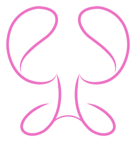

飛官退伍之後,宋先生與太太便致力於蝴蝶蘭的培育,過往的經歷讓宋先生養成了一絲不苟的個性,兩人培育植株總是親力親為,從不放過任何細節,也一直沒有停下過腳步,至今超過20年,兩人的用心已經讓花園蛻變成全台灣品質數一數二的高品質供應商,外銷市場遍佈世界各地,現在兩人已屆退休之年,第二代接手後將秉持著堅持品質的精神,繼續深化品牌的核心價值,期待讓更多的人感受蝴蝶蘭的清新淡雅之美
與我接觸的宋小姐是第二代瞜!!對於未來的經營相當有規畫,目前正積極的轉型,轉型的目標之一就是要建立自己的品牌,討論的時候帶著自家的產品,一邊告訴我栽種蝴蝶蘭的流程,中間的養護,國際市場的現況..等等,讓我充分瞭解關於自家品牌的概況
經過我們的討論與反覆思考,歸納的重點:
先從這個ICON講起,很明顯示一個上下的鏡像,但是一開始只有上半部
其實很簡單,這裡就是蝴蝶蘭的花蕊,我覺得這裡很符合"帶有力量的女性化"這個念想,對花來說,這個部分就是生命的起源~~(有沒有很像女性的子宮!!)跟業主的訴求整個大mach阿!!!!但業主覺得應該要再隱晦一點,所以就改成上下鏡像,一邊保留原始設計一邊調整
配色部分就是最直覺的紅配綠喔～～當遇到會被認為"很俗氣""很老派"的配色,只要調整一下"明度""彩度"&"使用比例"大概可以解決90%以上的問題~~這個LOGO沒有大片的色塊,所以也不會有"對比太強烈"的問題
再來是字體的選用,一開始的設定就是要東方味(業主很多客戶都是歐洲美洲人,對東方文化本來就有特殊的情感在,而且蝴蝶蘭在亞洲國家的象徵意義本來就很有內涵~~)細膩的線條跟中間ICON呼應的很好,整體結構穩定,筆畫的結尾都有保留書法的特色,雖然線條單純,但我覺得比較有力,再把比例調高一點點會讓人覺得氣質高雅